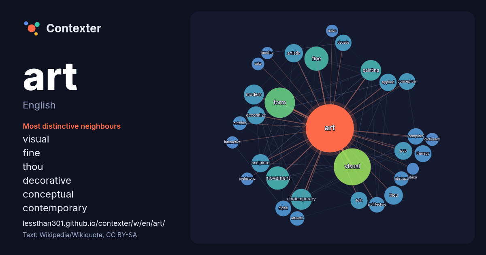

English · popular word
art
The words found around it in 2084 instances from English Wikipedia, Wikiquote and Hacker News.

Most distinctive neighbours
- visual 99×
- fine 38×
- thou 35×
- decorative 31×
- conceptual 28×
- contemporary 26×
- artistic 26×
- therapy 25×
- sculpture 24×
- painting 22×
- folk 22×
- form 22×
- pop 21×
- movement 21×
- decade 21×
- abstract 20×
- outsider 19×
- applied 19×
- artwork 18×
- sake 16×
× = how many times more often than in general English Wikipedia text.
Most frequent neighbours
- visual 138
- work 96
- form 93
- fine 59
- movement 55
- history 45
- contemporary 44
- painting 43
- created 41
- modern 40
- style 40
- music 39
- produced 37
- artists 36
- term 36
- thou 35
- artistic 34
- world 34
- decorative 33
- sculpture 33
In context
- Art is a diverse range of cultural activity centered around works utilizing creative or imaginative talents, which are expected to evoke a worthwhile Wikipedia snippets · Art
- Look up ART in Wiktionary, the free dictionary. ART may refer to: American Refrigerator Transit Company Arab Radio and Television Network ART Teenz American Wikipedia snippets · ART
- experimental rock. Art rock primarily draws influences from the wider art world and academia; which includes contemporary art, art music, avant-garde art, experimental Wikipedia snippets · Art rock
- art (or fine arts) is considered a kind of high art and is made primarily for aesthetics or creative expression, distinguishing it from popular art, Wikipedia snippets · Fine art
- The Art of... is a series of art books which showcase the evolution of artwork throughout the development of popular and critically acclaimed animated Wikipedia snippets · The Art of...
- .art may refer to: The ART image file format, extension .art .art (top-level domain) This disambiguation page lists articles associated with the title Wikipedia snippets · .art
- Art for art's sake—the usual English rendering of l'art pour l'art (pronounced [laʁ puʁ laʁ]), a French slogan from the latter half of the 19th c … Wikipedia snippets · Art for art's sake
- NO!art is a radical avant-garde anti-art movement started in New York in 1959. Its founders sought to deliver a shock to the complacent consumerist society Wikipedia snippets · NO!art
More English words
- autumn
- bell
- bread
- bridge
- cat
- city
- climate
- clock
- death
- desert
- dog
- family
- food
- forest
- garden
- god
- gold
- health
- heart
- history
- honey
- horse
- island
- language
- life
- map
- mirror
- money
- mother
- mountain
- nature
- power
- rain
- road
- salt
- science
- shadow
- silence
- song
- star
- storm
- summer
- tea
- time
- train
- truth
- water
- winter
- work
Precomputed on 2026-10-09 with default settings (±5 words, medium corpus). The interactive map can refresh it with live data.